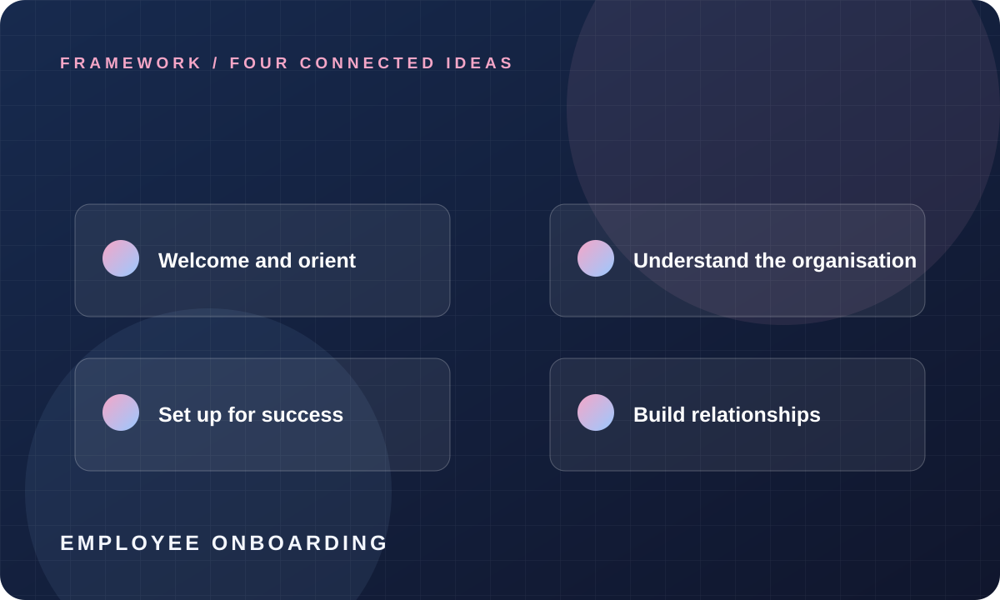
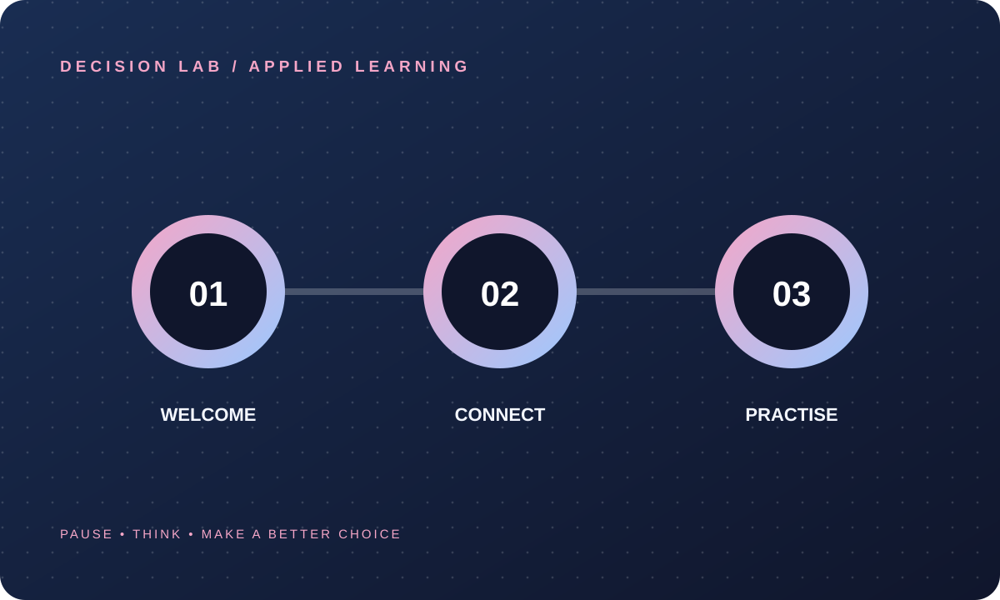

Explain organisational purpose, values, structure and ways of working.
EMPLOYEE EXPERIENCE / INTERACTIVE HTML COURSE
Employee Onboarding
A human-centred onboarding journey that helps new employees feel welcome, find the right support and become confident in their role.

VISUAL LEARNING EXPERIENCESHAY-ID / 07
SCROLL TO EXPLORE ↓
01 / COURSE OBJECTIVES
What you will be able to do.
By the end of this learning experience, you should be able to demonstrate these practical outcomes. Use them as a lens while you explore the chapters and make decisions.
Identify the essential information, contacts and tools needed at the start of employment.
Follow secure and supported processes to resolve access and setup issues.
Build working relationships through introductions, buddy support and check-ins.
Use role goals, demonstrations, guided practice and feedback to build readiness.

02 / YOUR LEARNING MAP
Six steps. One connected journey.
Each chapter builds on the previous one, moving from awareness to a more confident workplace response.
Welcome and orient
Onboarding is a journey, not a single event
Understand the organisation
Purpose, values and ways of working
Set up for success
Tools, access and essential processes
Build relationships
People make the organisation navigable
Learn the role
Turn expectations into supported practice
Check progress and grow
Use milestones, feedback and support
03 / EXPLORE THE CONTENT
Learn it. Connect it. Apply it.
Read through each chapter, examine the visual cues and consider how the ideas translate into day-to-day work.
CHAPTER 01 / WELCOME AND ORIENT
Onboarding is a journey, not a single event
Effective onboarding helps people understand where they are, what matters and how to get support. It begins before day one and continues as the employee learns the role, builds relationships and gains confidence. A good experience balances essential information with opportunities to ask questions and practise.
- Create a welcoming, clear first-day experience.
- Explain what the employee needs now versus what can wait.
- Share where to find reliable information and who can help.
DESIGN TAKEAWAY
A good first day should reduce uncertainty, not overwhelm someone with documents.
A good first day should reduce uncertainty, not overwhelm someone with documents.
CONCEPT / 01
CHAPTER 02 / UNDERSTAND THE ORGANISATION
Purpose, values and ways of working
New colleagues need to understand what the organisation does, whom it serves and how teams work together. Explain the mission, key products or services, values, structure and communication norms. Make the link between the person’s role and the outcomes the organisation is trying to achieve.
- Explain purpose, customers and the value the organisation creates.
- Introduce team responsibilities and how work moves between groups.
- Make values practical through examples of everyday behaviour.
DESIGN TAKEAWAY
Context helps a new employee see how their work fits into the bigger picture.
Context helps a new employee see how their work fits into the bigger picture.
CONCEPT / 02
CHAPTER 03 / SET UP FOR SUCCESS
Tools, access and essential processes
Access to systems, equipment and essential processes should be planned before the employee needs them. Explain where to get help, how to request access and how to protect credentials and information. Do not share passwords or bypass controls to speed up setup. Use the approved support route when something is missing.
- Confirm required equipment, accounts and role-based access.
- Explain security, privacy and acceptable-use expectations.
- Show how to request support and report setup problems.
DESIGN TAKEAWAY
A safe, supported setup is better than a fast workaround.
A safe, supported setup is better than a fast workaround.
CONCEPT / 03
CHAPTER 04 / BUILD RELATIONSHIPS
People make the organisation navigable
Relationships help new employees understand how work really happens. Introduce key colleagues, clarify who makes which decisions and provide a buddy or contact where possible. Explain how to ask for help, share progress and participate in team routines. Inclusion matters: do not assume every person will build relationships in the same way.
- Introduce key contacts and explain how they support the role.
- Create opportunities to meet colleagues and ask questions.
- Use a buddy or mentor relationship with clear expectations.
DESIGN TAKEAWAY
Belonging develops through useful connections, not only welcome messages.
Belonging develops through useful connections, not only welcome messages.
CONCEPT / 04
CHAPTER 05 / LEARN THE ROLE
Turn expectations into supported practice
Role readiness grows through demonstration, guided practice and feedback. Explain priorities, decision boundaries, quality expectations and common workflows. Let the employee observe, try tasks with support and gradually take on more responsibility. Avoid assuming that attending orientation means someone is ready to work independently.
- Break role expectations into visible, achievable milestones.
- Demonstrate important workflows and provide practice opportunities.
- Give timely feedback and identify where more support is needed.
DESIGN TAKEAWAY
Confidence grows when people can practise safely before they are expected to perform independently.
Confidence grows when people can practise safely before they are expected to perform independently.
CONCEPT / 05
CHAPTER 06 / CHECK PROGRESS AND GROW
Use milestones, feedback and support
Onboarding should include planned check-ins at useful intervals. Ask what is clear, what remains confusing and what support is missing. Review goals, workload, relationships and access to learning. Adjust the plan based on the employee’s experience and the needs of the role. Onboarding ends when the person is integrated and supported, not simply when a calendar date arrives.
- Schedule check-ins and make them two-way conversations.
- Review progress against role outcomes and identify support needs.
- Agree on next milestones and continuing development.
DESIGN TAKEAWAY
Onboarding is successful when the employee can contribute and knows how to keep growing.
Onboarding is successful when the employee can contribute and knows how to keep growing.
CONCEPT / 06
04 / DECISION LAB
What would you do next?
Use the ideas from the course in a short workplace situation. Select the response you would take and review the feedback.

WORKPLACE MOMENT / APPLY YOUR JUDGEMENT
A new employee cannot access a required system on day one. A colleague offers to share their own login so the new joiner can get started.
Choose the most appropriate response.
05 / KNOWLEDGE CHECK
Make the learning stick.
Answer five questions to check your understanding. Submit when you are ready to see your score and review the explanations.
YOUR NEXT STEP
Take the idea
into your work.
Choose one action from this course to apply in your next relevant task or conversation. Learning becomes valuable when it changes what we notice, decide or do.